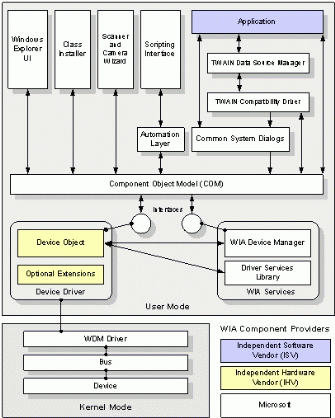
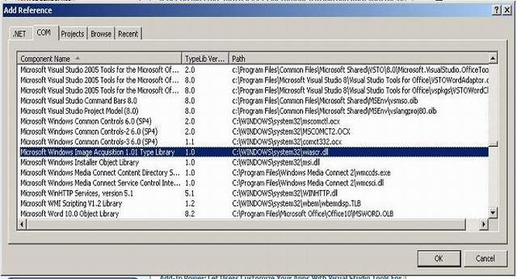
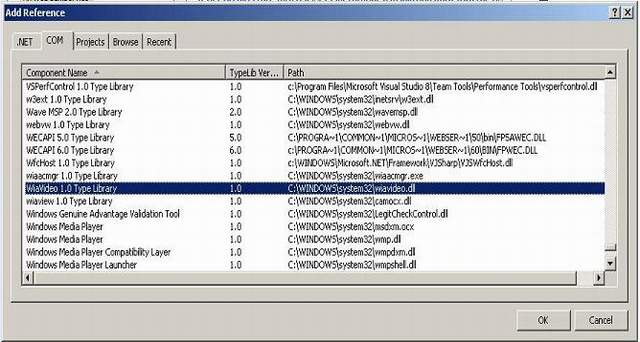

For a long time, I have been looking for a good way to capture images without too much trouble. All you need to do is call one method to get the image.
I have used Windows Image Acquisition (WIA) to capture images. WIA provides a great deal of compatibility with webcams already running on Microsoft Windows XP.
This is my first posting on The Code Project, please do not hesitate to comment or give any suggestions. I would be very thankful if you provide any feedback.
Windows XP supports still-image devices through Windows Image Acquisition (WIA), which uses the Windows Driver Model (WDM) architecture. WIA provides robust communication between applications and image-capture devices, allowing you to capture images efficiently and transfer them to your computer for editing and use.
WIA supports small computer system interface (SCSI), IEEE 1394, USB, and serial digital still image devices. Support for infrared, parallel, and serial still-image devices—which are connected to standard COM ports—comes from the existing infrared, parallel, and serial interfaces. Image scanners and digital cameras are examples of still image devices. WIA also supports Microsoft DirectShow®-based webcams and digital video (DV) camcorders to capture frames from video.
WIA architecture is both an Application Programming Interface (API) and a Device Driver Interface (DDI). The WIA architecture includes components provided by the software and hardware vendor, as well as by Microsoft. Figure 1 below illustrates the WIA architecture.

I have included all the required references in the source code. You don't need to do this, but if you wish to know how you may read this section.

You want to add a reference to Microsoft Windows Image Acquisition type library.

You also want to add a reference to WiaVideo Type Library. However, after some trouble I read about a bug and its fix that occurs while importing the type library.
Use ILDASM to dump the type library Interop.WIAVIDEOLib.dll, then use Notepad to replace occurrences ofvaluetype _RemotableHandle& to native int. Then compile the iL dump file you fixed using ILASM in
the CMD ilasm /DLL WIAVIDEOLib.il. Add a reference to the new DLL and you are set to go.
http://www.codeproject.com/Articles/15219/WebCam-Fast-Image-Capture-Service-using-WIA
http://blog.marcio-pulcinelli.com/2011/06/05/acessando-webcam-com-c/
#region API Declarations
//Abaixo tremos todas as chamadas das APIs do Sistema Operacional Windows.
//Essas chamadas fazem a interface do nosso controle com a WebCam e com o SO.
//Esta chamada é uma das mais importantes e é vital para o funcionamento do SO.
[DllImport("user32", EntryPoint = "SendMessage")]
public static extern int SendMessage(int hWnd, uint Msg, int wParam, int lParam);
//Esta API cria a instância da webcam para que possamos acessa-la.
[DllImport("avicap32.dll", EntryPoint = "capCreateCaptureWindowA")]
public static extern int capCreateCaptureWindowA(string lpszWindowName, int dwStyle, int x, int y, int nWidth, int nHeight, int hwndParent, int nID);
//Esta API abre a área de tranferência para que possamos buscar os dados da webcam.
[DllImport("user32", EntryPoint = "OpenClipboard")]
public static extern int OpenClipboard(int hWnd);
//Esta API limpa a área de transferência.
[DllImport("user32", EntryPoint = "EmptyClipboard")]
public static extern int EmptyClipboard();
//Esta API fecha a área de tranferência após utilização.
[DllImport("user32", EntryPoint = "CloseClipboard")]
public static extern int CloseClipboard();
//Esta API recupera os dados da área de tranferência para a utilização.
[DllImport("user32.dll")]
extern static IntPtr GetClipboardData(uint uFormat);
#endregion
#region API Constants
//Esas constantes são predefinidas pelo SO
public const int WM_USER = 1024;
public const int WM_CAP_CONNECT = 1034;
public const int WM_CAP_DISCONNECT = 1035;
public const int WM_CAP_GT_FRAME = 1084;
public const int WM_CAP_COPY = 1054;
public const int WM_CAP_START = WM_USER;
public const int WM_CAP_DLG_VIDEOFORMAT = WM_CAP_START + 41;
public const int WM_CAP_DLG_VIDEOSOURCE = WM_CAP_START + 42;
public const int WM_CAP_DLG_VIDEODISPLAY = WM_CAP_START + 43;
public const int WM_CAP_GET_VIDEOFORMAT = WM_CAP_START + 44;
public const int WM_CAP_SET_VIDEOFORMAT = WM_CAP_START + 45;
public const int WM_CAP_DLG_VIDEOCOMPRESSION = WM_CAP_START + 46;
public const int WM_CAP_SET_PREVIEW = WM_CAP_START + 50;
#endregion
#region API Declarations //Abaixo tremos todas as chamadas das APIs do Sistema Operacional Windows. //Essas chamadas fazem a interface do nosso controle com a WebCam e com o SO. //Esta chamada é uma das mais importantes e é vital para o funcionamento do SO. [DllImport("user32", EntryPoint = "SendMessage")] public static extern int SendMessage(int hWnd, uint Msg, int wParam, int lParam); //Esta API cria a instância da webcam para que possamos acessa-la. [DllImport("avicap32.dll", EntryPoint = "capCreateCaptureWindowA")] public static extern int capCreateCaptureWindowA(string lpszWindowName, int dwStyle, int x, int y, int nWidth, int nHeight, int hwndParent, int nID); //Esta API abre a área de tranferência para que possamos buscar os dados da webcam. [DllImport("user32", EntryPoint = "OpenClipboard")] public static extern int OpenClipboard(int hWnd); //Esta API limpa a área de transferência. [DllImport("user32", EntryPoint = "EmptyClipboard")] public static extern int EmptyClipboard(); //Esta API fecha a área de tranferência após utilização. [DllImport("user32", EntryPoint = "CloseClipboard")] public static extern int CloseClipboard(); //Esta API recupera os dados da área de tranferência para a utilização. [DllImport("user32.dll")] extern static IntPtr GetClipboardData(uint uFormat); #endregion #region API Constants //Esas constantes são predefinidas pelo SO public const int WM_USER = 1024; public const int WM_CAP_CONNECT = 1034; public const int WM_CAP_DISCONNECT = 1035; public const int WM_CAP_GT_FRAME = 1084; public const int WM_CAP_COPY = 1054; public const int WM_CAP_START = WM_USER; public const int WM_CAP_DLG_VIDEOFORMAT = WM_CAP_START + 41; public const int WM_CAP_DLG_VIDEOSOURCE = WM_CAP_START + 42; public const int WM_CAP_DLG_VIDEODISPLAY = WM_CAP_START + 43; public const int WM_CAP_GET_VIDEOFORMAT = WM_CAP_START + 44; public const int WM_CAP_SET_VIDEOFORMAT = WM_CAP_START + 45; public const int WM_CAP_DLG_VIDEOCOMPRESSION = WM_CAP_START + 46; public const int WM_CAP_SET_PREVIEW = WM_CAP_START + 50; #endregion